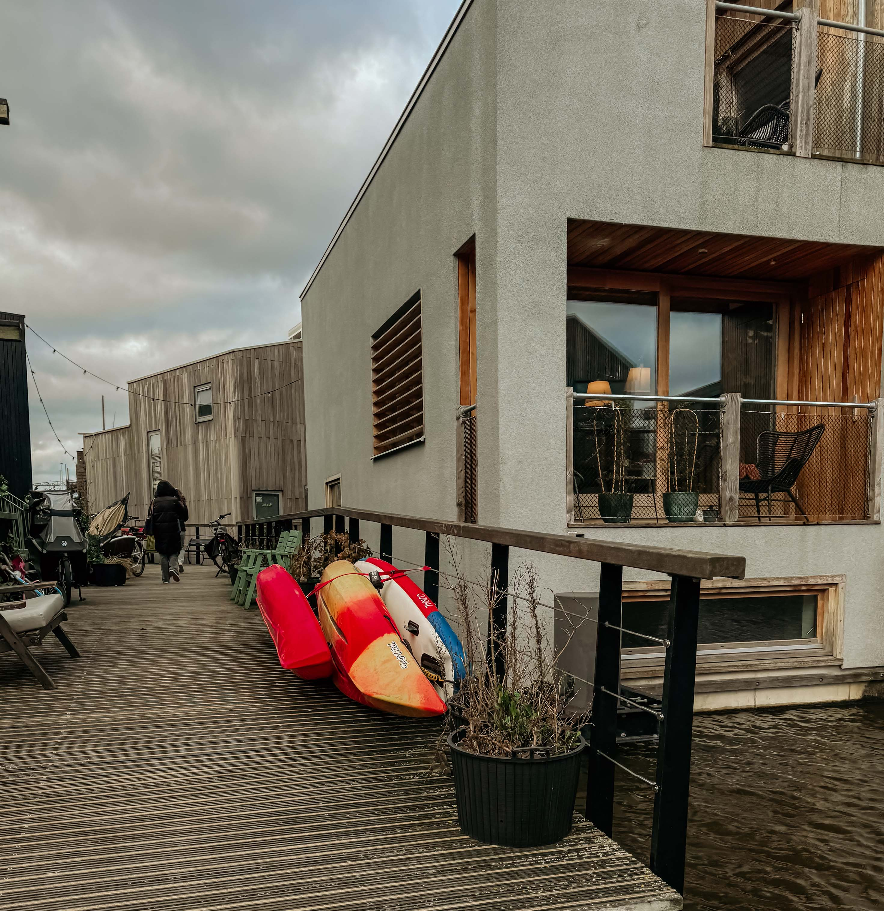
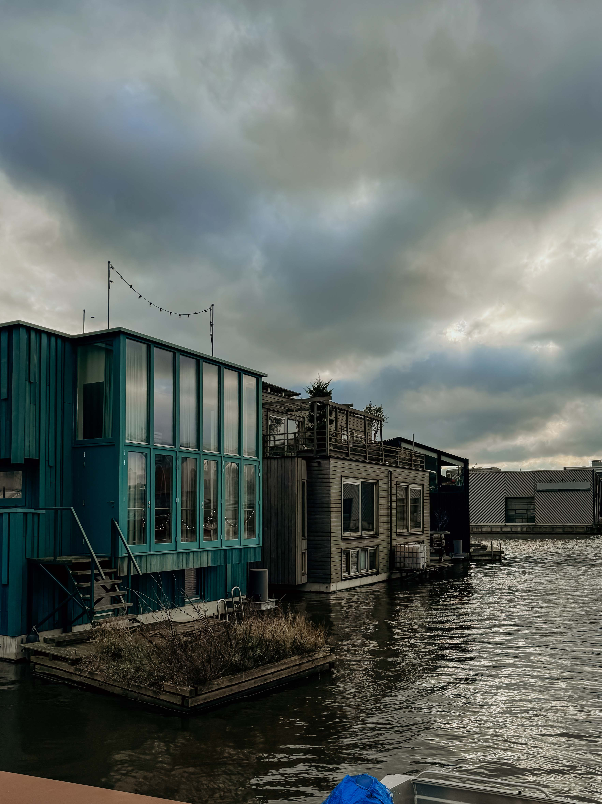
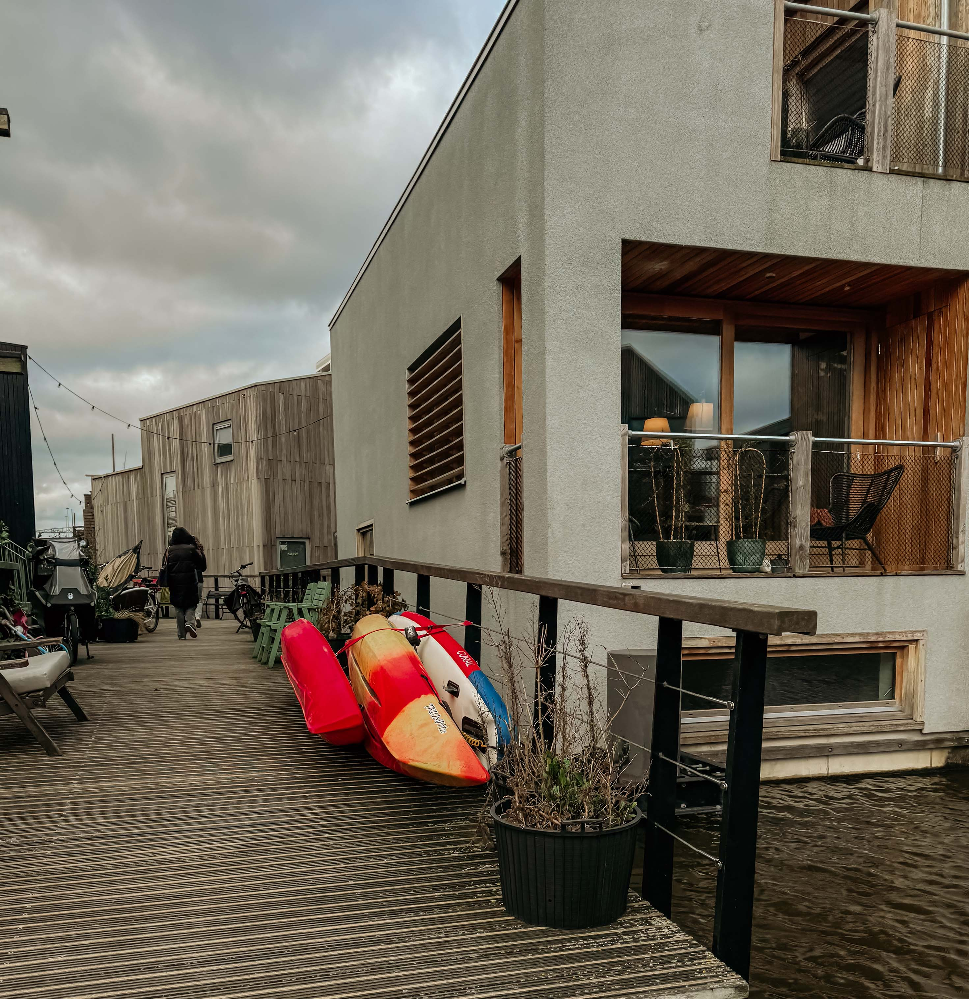
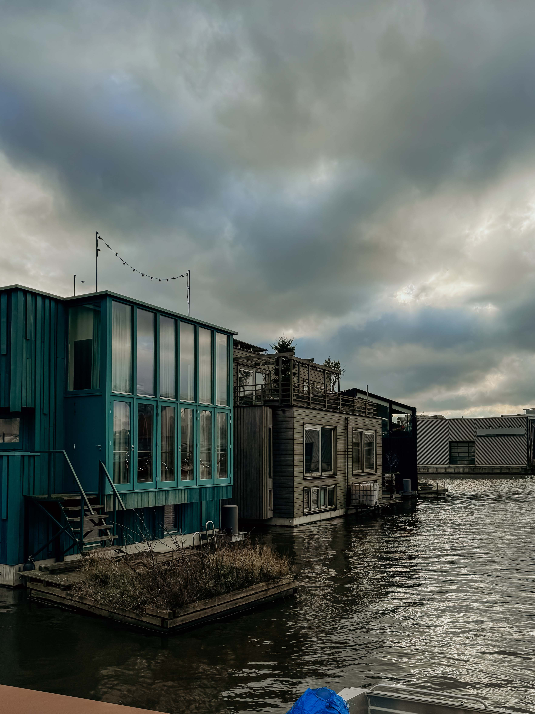

Wat is SchoonSchip?
Een drijvende woonwijk in het Johan van Hasseltkanaal, Amsterdam-Noord. Wij wonen sinds het begin van 2020 met 46 huishoudens op 30 arken. 10 jaar lang is hard gewerkt door de bewoners om het schoonschip te ontwerpen, ontwikkelen en te realiseren.
Waar staan wij voor?
Wij staan voor duurzaamheid, eenheid, inspiratie. Door middel van het schoonschip willen wij samenwerken, elkaar en andere inspireren tot een duurzamere manier van leven. Wij willen kunnen bijdragen aan een aantrekkelijke leefomgeving.
 


